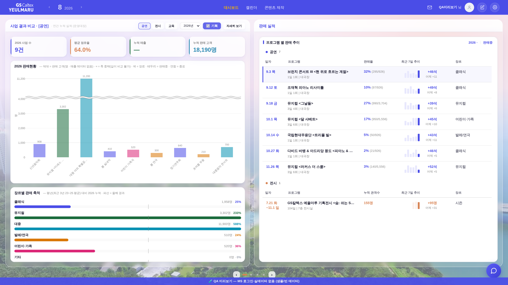
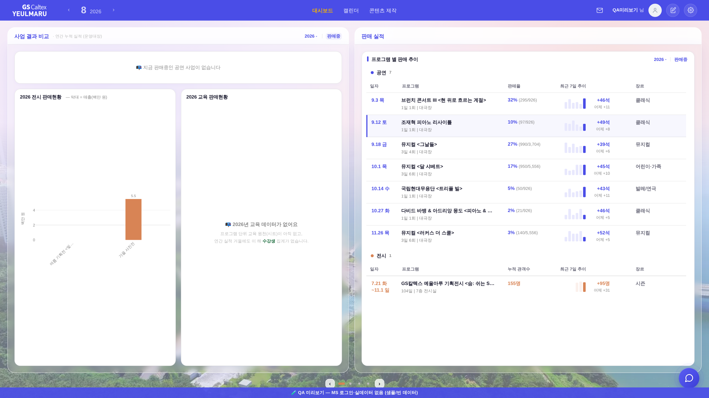
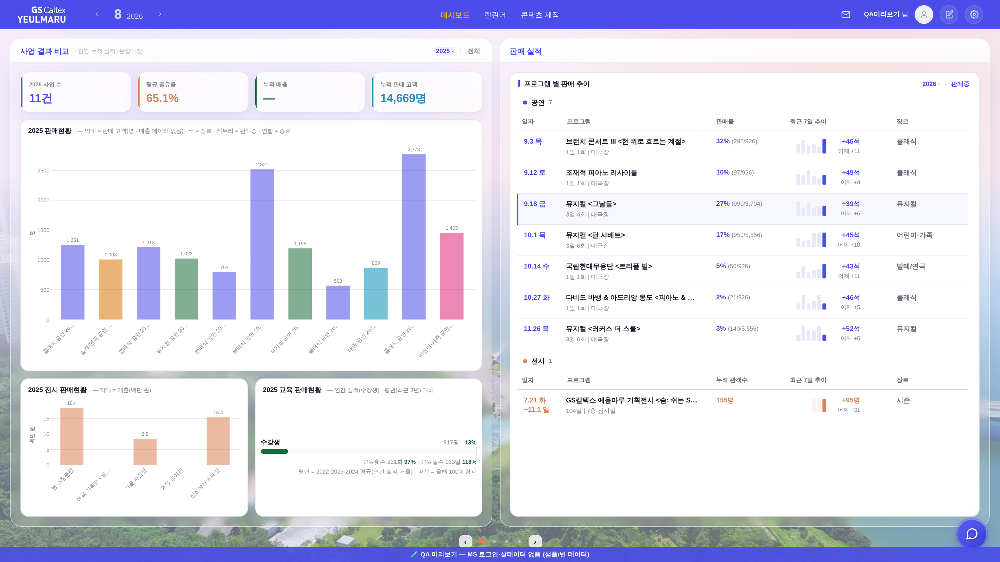

지시(운영자): 「여기 하단에 장르별 판매 축적 대신에, 반으로 갈라서, 좌 전시 판매현황 우 교육 판매현황 이렇게 해줄래? 보이는건 공연 처럼 연간으로」 → 「상단에 전시, 교육 선택자를 삭제해줘」 → 「공연 전시 교육 2026년 기획 자세히보기 이거 모두 삭제해주고 첨부와 같은 토글만 넣어줘」 → 「전체 > 판매중 > 전체 > 판매중 이렇게 토글되고 전체가 기본값」.
화면 = QA 진입로(?qa=admin) + 레이아웃 스모크와 같은 목데이터(tools/qa_mock_ops.mjs) · 실데이터·PII 미접촉. 1920×1080.


| 자리 | 전 | 후 |
|---|---|---|
| 헤더 조작부 | 분야 칩 3(공연·전시·교육) · 연도 셀렉트(2026년) · 분류 체크(☑기획) · 「자세히 보기」 버튼 | 「2026 ▾ │ 전체」 한 벌(우 열 표 머리가 쓰던 정본 부품 .ry-yr-tg·.ry-hd-div·.ry-live-tg 그대로) |
| 좌 열 하단 | 장르별 판매 축적(평년 대비 게이지 5줄) | 좌 = 전시 판매현황(선택 연도 전시 막대 · 공연 막대와 같은 부품의 exhib 축) │ 우 = 교육 판매현황(연간 실적 거울의 평년 대비 수강생 게이지 · 그 해 집계 0이면 빈 상태) |
| 제목 | 사업 결과 비교 · [공연] | 사업 결과 비교 — 꼬리표 철거(분야 칩과 한 벌이던 표식인데, 이제 한 면이 공연·전시·교육을 같이 그린다) |
| 토글 기본값 | — | 전체(종료·예정 포함) · 누르면 판매중 → 다시 전체. 우 열 「판매 실적」 표의 판매중 토글과 상태 분리(그쪽 기본값 = 판매중, 그대로 유지) |
| 분류(기획/대관) | 체크박스 UI | UI만 철거 · 기본값(기획 = 켬)은 그대로라 화면 값 무변 |
| 「자세히 보기」 모달 | 헤더 버튼 | 대시보드 세부메뉴·모바일 메뉴 진입로 그대로(openBusinessBoard) = 고아화 0 |
| 구 분야 탭 면 | 칩을 누르면 면 전체가 전시(좌)·교육(우)으로 교체 | 철거 — 전시·교육이 공연 면 안에 상시로 있으니 탭 왕복이 필요 없다 |
공연 목록·막대·우 열 상세 표가 한 곳(list)에서 함께 걸러지고, 전시 반쪽도 같은 축(진행중)으로 좁혀진다.
목데이터엔 판매중 공연이 없어 공연 자리는 빈 상태 카드가 되는데, 전시·교육 반반 줄은 남긴다(분야가 다른 축이라 같이 사라지면 「전시도 없다」로 읽힌다).


npm run smoke:layout — 1920×1080 · 1600×900 · 1366×768 · 2560×1440 · 1280×800 전부 PASS
(좌↔우 유리박스 하단선 Δ0 · 마지막 흰 도형 하단선 Δ0 · 안선 밀착 · 재계산 흔들림 0). 게이트의 구 「분야 칩 왕복」 검사는 「전체 ↔ 판매중」 왕복으로 교체.tools/scratch/probe_3split_flow.mjs) — 기본 → 판매중 → 전체 복귀 → 연도 드롭다운(15개 항목) → 2025 → 슬라이드2(우 = 판매현황 상세) → 그 상태에서 토글 왕복까지 JS 오류 0,
모든 상태에서 두 반쪽 카드 하단선 Δ0.probe_narrow.mjs) — 1100×820 · 감속선호 · 넓은 화면 연타 전 경로 JS 오류 0.python3 tools/check_design.py raw hex 1590/1590 · :root 2/0(신규 색·토큰 0) · check_refs ✓ · check_wiring ✓ · build_annual_yr PASS.openBusinessBoard)의 장르 벤치마크·시즌 추세가 계속 들고 있고, 3면 판매현황 막대도 여전히 색 = 장르다._YR.cats['교육'])만 읽는다 — 2026은 아직 집계 전(0)이라 빈 상태가 정직한 표기다. 과거 연도를 다른 소스로 재생성하지 않는다(라우터 경고 준수).